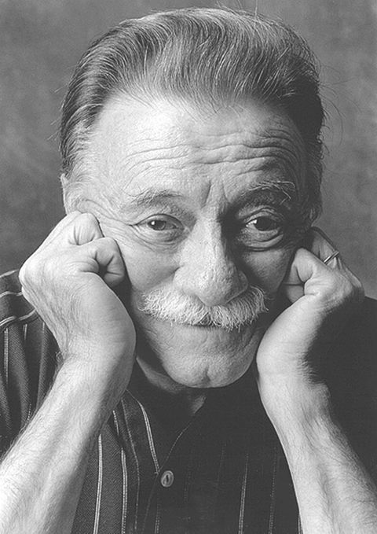

Creative Spot
Citas destacadas del libro: La Tregua
Por Mario Benedetti

Publicada en 1960, La Tregua es una de las obras más emblemáticas de la literatura latinoamericana. Escrita en forma de diario íntimo, nos introduce en la rutina gris y monótona de Martín Santomé, un hombre viudo cercano a la jubilación, cuya vida da un vuelco inesperado al conocer a Laura Avellaneda.
A través de sus páginas, Benedetti explora la soledad, el paso del tiempo, la burocracia del alma y la maravillosa pero efímera irrupción del amor. A continuación, comparto mis fragmentos y reflexiones favoritas de esta joya literaria:
"Ella me daba la mano y no hacía falta más. Me alcanzaba para sentir que era bien recibido. Más que besarla, más que acostarnos juntos, más que ninguna otra cosa, ella me daba la mano y eso era amor."
"Posiblemente me quisiera, vaya uno a saberlo, pero lo cierto es que tenía una habilidad especial para herirme."
"Tengo la horrible sensación de que pasa el tiempo y no hago nada, y nada pasa, y nada me conmueve hasta la raíz."
Cada una de estas líneas refleja la melancolía cotidiana que Benedetti dominaba a la perfección. Es un libro que duele, pero que al mismo tiempo reconforta al recordarnos que siempre existe la posibilidad de una tregua con el destino.

Sobre el Autor: Mario Benedetti
Fue un destacado escritor, poeta y dramaturgo uruguayo, integrante de la célebre Generación del 45. Su lenguaje directo, cargado de sensibilidad, sencillez y un profundo entendimiento de la psicología de la clase media urbana, logró conectar con millones de lectores en todo el mundo. Su vasta obra incluye más de 80 libros traducidos a más de 20 idiomas.